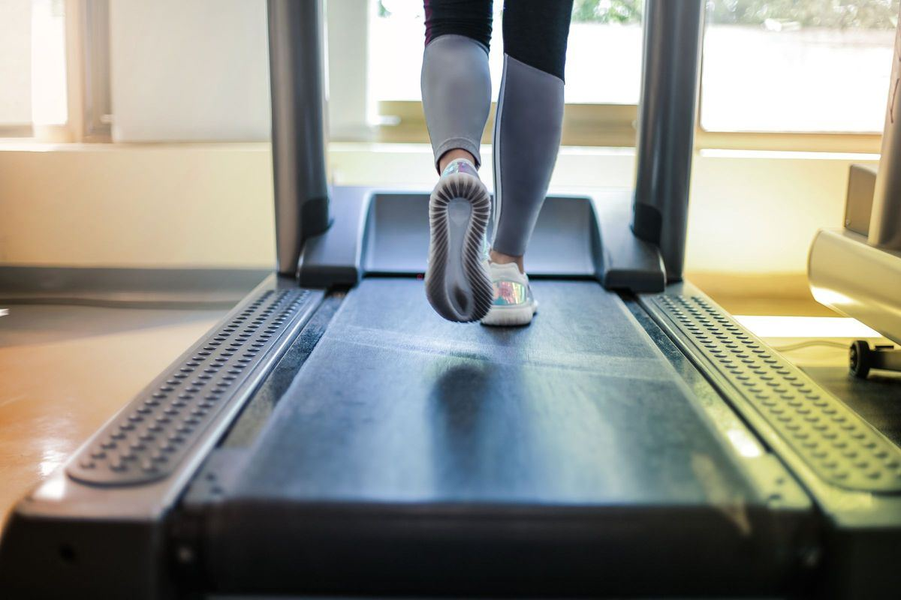

Starter plan
Walking Pad Workout Plan for Beginners: 4 Easy Weeks

This guide contains affiliate links. If you buy through them, Holistic Life may earn a small commission at no extra cost to you. How we use affiliate links.
Quick answer
- The plan is three walks: an easy 10 minutes, a steady 20 and a 20-minute interval walk. All are flat, so no incline is needed.
- Pace comes from the talk test, not a speed chart. At a steady effort you can talk but not sing.
- Week one is three easy 10-minute walks. Week four is five 20-minute walks.
- At a desk, walk slowly in short blocks during calls and reading. Do the steady walks away from the keyboard.
This walking pad workout plan gives you three simple walks and four easy weeks, written for someone starting from nothing. Every walk is flat, so you do not need an incline. There is no speed chart either. You set your pace by how your breathing feels.
It works on a walking pad, and it works as a treadmill walking workout too. Any belt that runs slowly and steadily will do. The walks are short, the build is slow, and a missed day does not ruin anything.
Before you start
- Step on with the belt stopped. Start at the slowest speed and keep your first walks short.
- Wear closed shoes with a flat, grippy sole. Socks and slippers can slip.
- Clear the floor and tuck cables away. Keep children and pets off the belt.
- Clip on the safety key or use the auto-stop if your pad has one. If it has a handle, hold it whenever you feel unsteady.
Check with a clinician first if you have balance problems or dizziness, a recent injury or surgery, joint pain, or a heart, lung or other health condition that affects exercise. Stop if you feel dizzy, have chest pain or are short of breath in an unusual way.
The three walks
All three are flat. Easy, steady and brisk describe how your breathing feels. The next section shows how to find each one.
| Walk | Time | How it goes |
|---|---|---|
| Easy 10 | 10 minutes | 2 minutes very slow to settle in, 6 minutes easy, 2 minutes slowing down |
| Steady 20 | 20 minutes | 3 minutes easy, 14 minutes steady, 3 minutes easy |
| Interval 20 | 20 minutes | 3 minutes easy, then 5 rounds of 1 minute brisk and 2 minutes easy, then 2 minutes easy to finish |
Easy means you could chat comfortably, even sing. Steady means you can talk but not sing. Brisk is the top of a talking pace: you can still say a full sentence. If you can only get out a few words, that is too fast for this plan, so slow down.
Find your pace without a speed chart
The CDC describes the talk test as a rule of thumb. At a moderate effort you can talk, but not sing. At a vigorous effort you cannot say more than a few words without pausing for a breath. So you do not need a chart, only a few minutes and your own breathing.
- Start slow for 3 minutes. Let your legs and breathing settle before you change anything.
- Speed up a little at a time. Raise the speed one step, then walk for half a minute before you raise it again.
- Hold when singing gets hard. Try a line of a song as you walk. When you cannot finish the line in one breath, stop speeding up and hold that speed.
- Check you can still talk. Say a sentence out loud. If it comes out smoothly, you are in the right place.
- Note your display number. Write it down, or save it in your phone.
That number is your steady pace for now. Easy is a notch or two below it. Brisk is a notch or two above, where full sentences are still possible. The number is yours, not a target. It differs between people and machines, and it may change over the weeks.
The 4-week plan
| Week | Days | Walks |
|---|---|---|
| 1 | 3 | Three Easy 10s |
| 2 | 4 | Two Easy 10s, two Steady 20s |
| 3 | 4 | Three Steady 20s, one Interval 20 |
| 4 | 5 | Three Steady 20s, two Interval 20s |
What each week adds
- Week 1: Show up and learn your pace. Nothing else.
- Week 2: Two of your walks stretch to 20 minutes.
- Week 3: Steady walks become the main walk, and you try one interval walk.
- Week 4: One more walking day, and a second interval walk.
Keep a rest day between walks where you can. If a week feels hard, repeat it. If you miss a walk, do not double up. Do the next one on the plan. Our beginner walking plan has the full missed-day rule.
Three short walks in a desk day
The CDC says you can break activity up into smaller chunks of time. At a desk, that can be three 10-minute walks spread across the workday: mid-morning, after lunch and mid-afternoon. On a day when the plan calls for an Easy 10, one of them is that walk. The others are extra movement.
When to walk: calls, video meetings where you mostly listen, and reading.
When to stand still: careful typing, detailed mouse work and anything that needs a steady hand.
One honest note on effort. At a pace slow enough to type, you can probably sing. By the talk test, that is lighter than a steady walk. It still breaks up sitting, and the CDC's advice is to move more and sit less, because some activity is better than none. Save the Steady 20 and the Interval 20 for a break or for after work, away from the keyboard.
For desk height, bend your elbows to about a right angle, keep your wrists straight, and raise the screen so you look ahead, not down. Our walking pad buying checklist has more setup advice.
What helps
You need nothing beyond a pad or a treadmill and a pair of shoes. These are the items that fit this plan. If you are still choosing a machine, see walking pad vs treadmill.
Walking pad
The plan needs a belt that runs slowly and steadily. Any walking pad or treadmill that does that will work, and flat is fine.
What to look for
- A weight limit above the user's weight, with room to spare
- A slow minimum speed and a simple remote
- An auto-stop or a safety key
See walking pads on Amazon (paid link)
Equipment mat
A mat under the pad protects the floor and softens noise and vibration, which matters for daily walks in an apartment.
What to look for
- A size larger than the walking pad
- A dense, non-slip surface
- Made for your floor type, such as hardwood, tile or carpet
Options that fit
- Sunny Health & Fitness equipment mat, 79 x 35.5 inches High-density foam with a textured top, listed for wood and tile floors (paid link)
- GymCope treadmill mat, 72 x 36 inches, 6 mm thick Dense mat with an anti-skid bottom, listed for wood, tile and carpet (paid link)
See more equipment mats on Amazon (paid link)
Standing desk or desk riser
Desk walks only work when the screen and keyboard come up to standing height. A riser on the desk you already own is the simplest way to get there.
What to look for
- A height range that suits you while standing
- A sturdy base with little wobble
- A keyboard tray or a large surface for a laptop
Options that fit
- VIVO standing desk converter, 32 inches Raises from 4.5 to 20 inches, and the keyboard tray lifts with the top (paid link)
- FLEXISPOT EN1 electric standing desk, 48 x 24 inches Adjusts from 28.9 to 46.5 inches, with four height presets (paid link)
See more desk risers and standing desks on Amazon (paid link)
Insulated water bottle with a leakproof lid
Water within reach makes it easier to sip between walks. A lid that locks shut matters at a desk, next to a keyboard.
What to look for
- A lid that locks or screws shut, with a covered straw or spout
- Insulated, so water stays cold through the afternoon
- Parts that can go in the dishwasher
Options that fit
- Owala FreeSip insulated water bottle, 24 oz Carry loop locks the lid shut, and the lid is dishwasher safe (paid link)
- Takeya Actives insulated water bottle with spout lid, 24 oz Spout lid screws shut, and the bottle is listed as dishwasher safe (paid link)
See more leakproof bottles on Amazon (paid link)
After week four
Week four adds up to 100 minutes on the pad (5 x 20). The CDC says adults need at least 150 minutes of moderate-intensity activity a week, so you will still be short of that. This is normal in a first month.
To keep going, add five minutes to each Steady walk every week or two, until they reach 30 minutes. Five 30-minute walks add up to 150, which is the example the CDC gives: 30 minutes a day, 5 days a week.
Frequently asked questions
Do I need an incline for a walking pad workout plan?
No. Every walk here is flat, and many pads have no incline at all. Your effort comes from your pace, which you set by the talk test.
How fast should I set a walking pad?
There is no one number. The right setting differs by person and by machine. Use the talk test, then write down the number on your own display and treat it as your pace for now.
Can I follow this plan on a regular treadmill?
Yes. Keep the belt flat, or at the machine's lowest setting, and use the same talk test to set your pace.
Sources
Save this guide for later
Tap a pin to save it to your Pinterest boards.